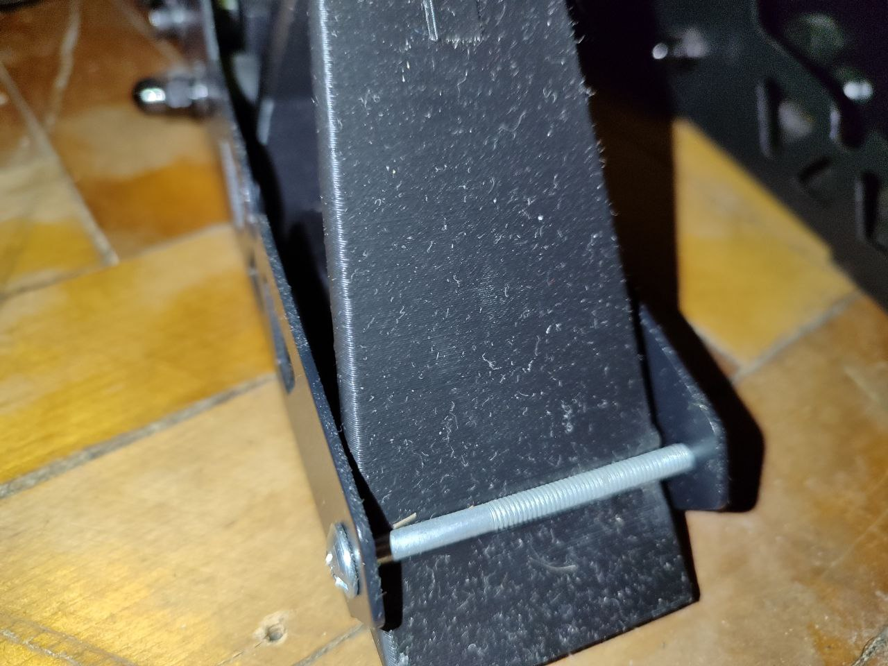
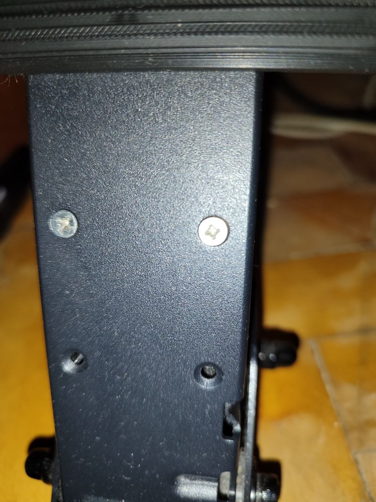
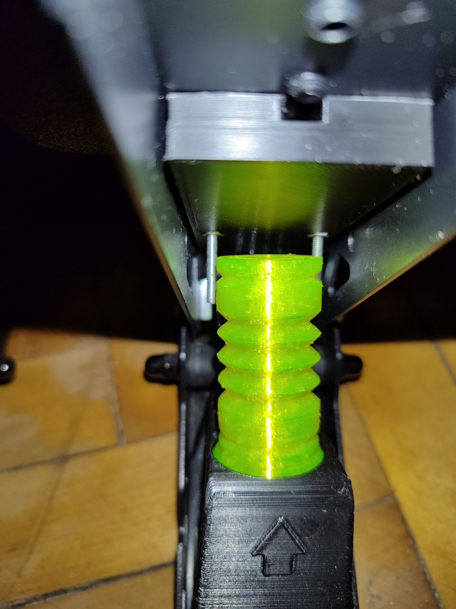
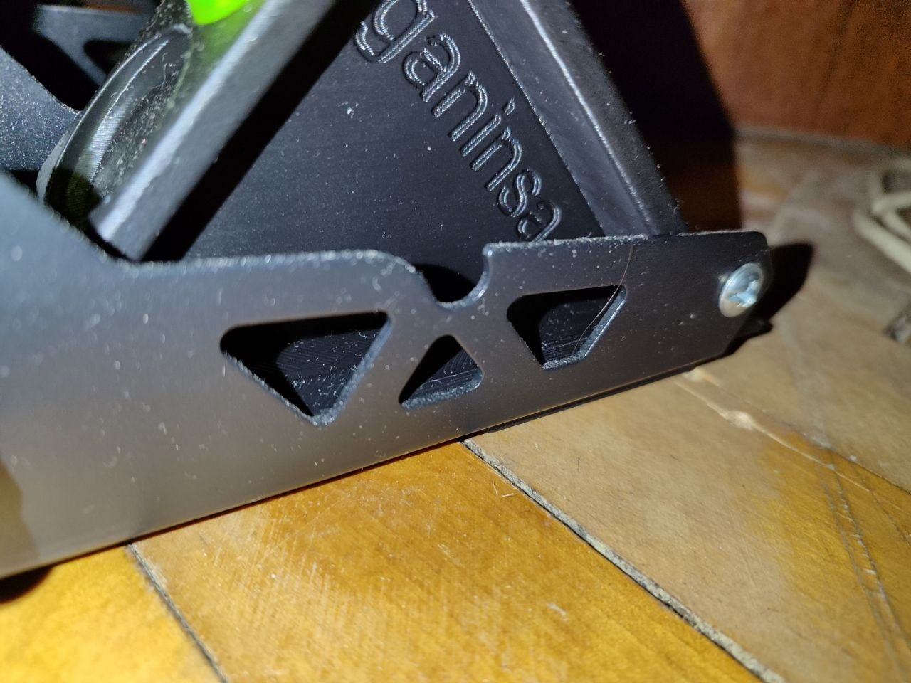
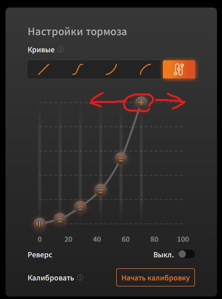

1. Устанавливаем упорный болт
Картинка 1
2. С обратной стороны педали устанавливаем наборную пластину(ы), эти пластины нужны для того чтобы убрать или добавить свободный ход педали.
Картинка 2
Картинка 3
3. Дальше нужно вставить демпфирующий элемент в опорный блок и установить блок на основание педали. Подбирайте положение и комбинации элементов на свой вкус и цвет
Картинка 4
Картинка 5
4. Проверьте рукой что все работает на как видео https://youtube.com/shorts/eJOLv6BFz3g?si=8KPT872BoiOGkgCN.
5. Настроить Moza Pithouse Нажимаем педаль тормоза, с тем усилием которое нам комфортное для максимального торможения. Двигаем верхний ползунок влево как на картинке, положение ползунка нужно установить так, чтобы при вашем комфортном нажатии было 100%. 
Приятной игры.